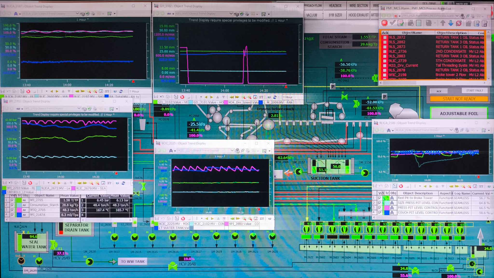

Gambar pertama menampilkan tampilan sistem pengontrol kualitas (quality control) pada Paper Machine 1. Di dalamnya terdapat pengukuran dan pengaturan seperti Basis Weight, Moisture Control, dan Reel Speed. Grafik yang ditampilkan menunjukkan fluktuasi nilai aktual terhadap target, yang penting untuk memastikan kertas yang dihasilkan sesuai standar.
Gambar kedua memperlihatkan tampilan antarmuka DCS (Distributed Control System) untuk Paper Machine 1. Sistem ini digunakan untuk memantau dan mengontrol aliran proses produksi, tekanan, suhu, kecepatan pompa, dan berbagai sensor lainnya. Tampilan ini sangat penting bagi operator untuk menjaga kestabilan operasi mesin secara real-time.